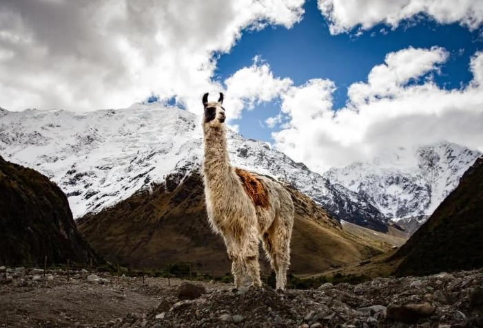
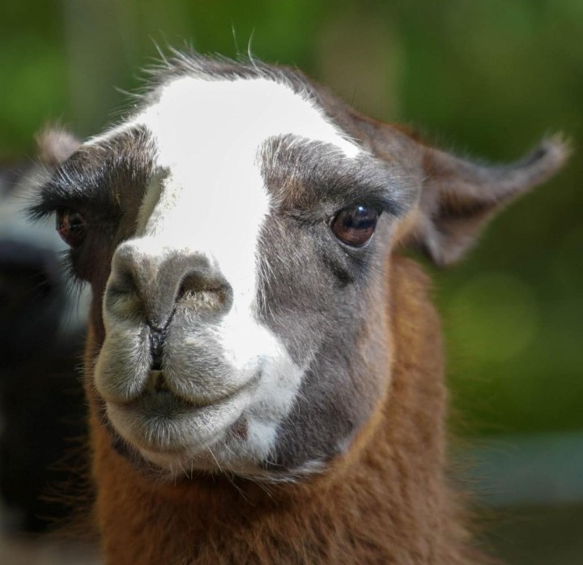

Llamas
Llamas are so fascinating mammals native to South America,particularly the Andes Mountains. They are Known for their long necks, tall ears, thick coats, and calm apperance.
People have raised liamas for thousands of years, using them to carry goods across mountainous landscapes. Their woolly coats also provide useful fibres.
Llamas are social animal that are often live in groups and communicate through body movements and sounds.
Physical Characteristics:
Llamas have long necks, slender legs, large ears, and thick coats. Their fur can be white, brown, black, grey, or a mixture of different colours.
They have padded feet that help them walk across rocky ground.
Habitat:
Llamas originated in the mountainous regions of South America, especially the Andes.
Today,domesticated llamas can be found in farms and other managed environments in many parts of the world.
Diet:
Llamas are herbivores, eaning they eat plants.
Their diet are:
Behaviour:
Llamas are social animals that generally prefer living alongside other llamas.
They communicateusing body language, ear movements, and different sounds. When threatened or stressed, they may spit as a defensive behaviour.
Amazing Llama Facts:
Why Are Llamas Important?
Llamas have supported communities in the Andes for generations.
They provide fibre and have traditionally helped people supplies across difficult landscapes.
Llamas show us how animals adapt to different environments and how humans and animals can develop important relationships.